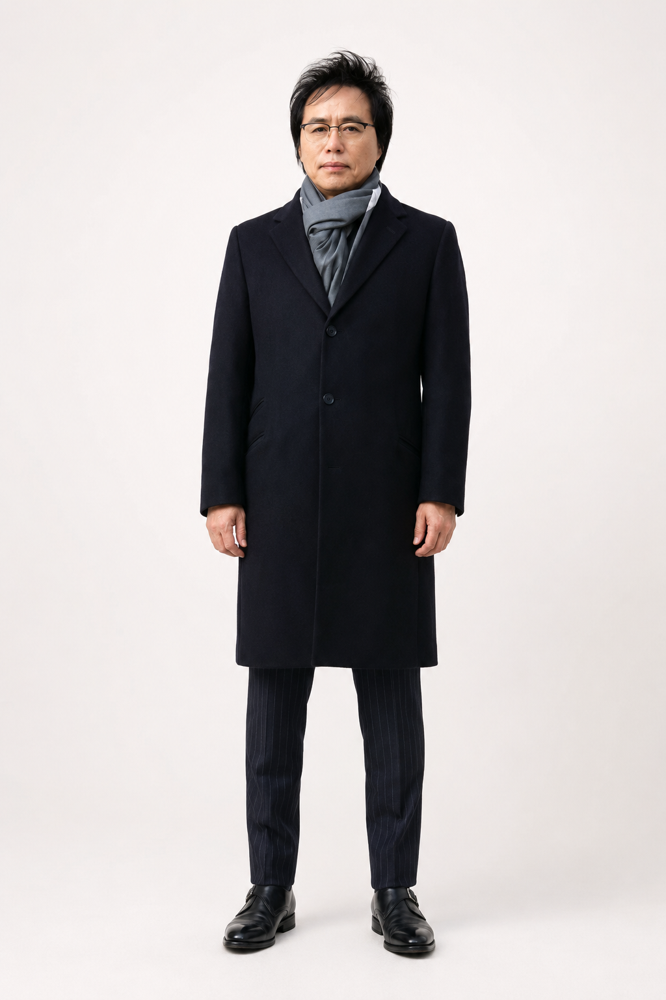
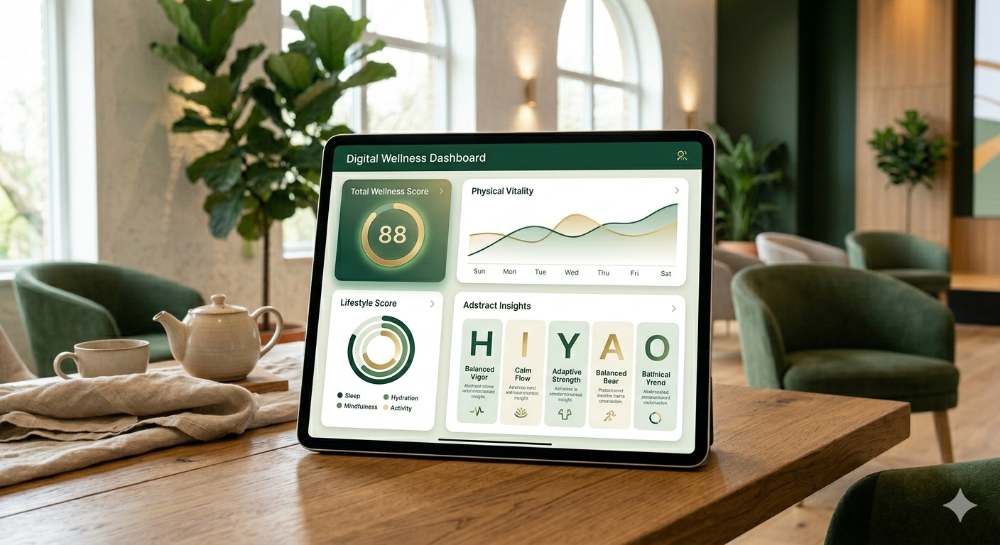
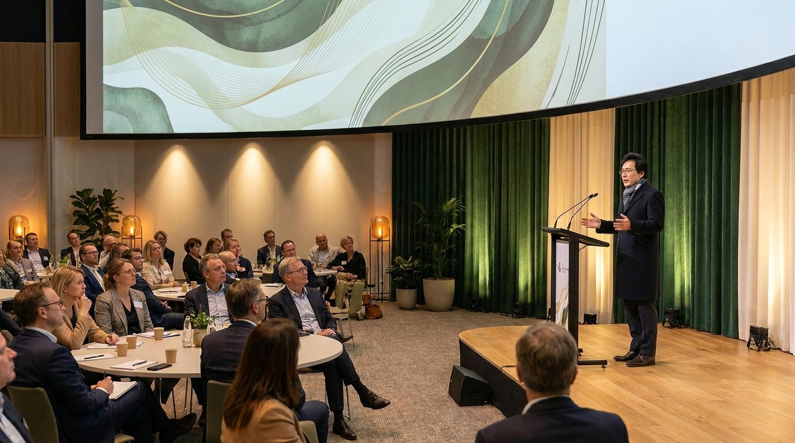

5CODE Wellness Platform
체질·체력·생활습관을 기반으로 설계하는
새로운 웰니스 자기관리 플랫폼, 5CODE.
개인에게 맞는 운동, 식사, 라이프스타일을 제안합니다.
같은 방법이 모두에게 맞을 수 없습니다.
체질과 생활습관이 다르면, 관리법도 달라져야 합니다.
동일한 음식과 운동이 누군가에게는 이상적이지만, 다른 누군가에게는 맞지 않을 수 있습니다. 5CODE는 체질별 생활습관 가이드를 통해 나에게 맞는 방식을 찾도록 돕습니다.
체질과 체력 수준을 고려하지 않은 운동은 오히려 부담이 될 수 있습니다. 개인에게 맞는 운동 유형과 강도를 파악하는 것이 지속가능한 웰니스의 시작입니다.
수면, 식사, 스트레스, 활동량 등 일상의 습관들이 쌓여 건강의 방향을 결정합니다. 5CODE는 생활습관 개선을 통한 자기관리 가이드를 제공합니다.

Andrew Kim
30년간 일본·한국 헬스케어 현장에서 체질 기반 자기관리 체계를 연구하고 사업화해온 웰니스 컨설턴트입니다. 전통 동양의학의 지혜를 현대적 웰니스 언어로 재해석하여 5CODE와 VAIOH 방법론을 개발했습니다.
의료 행위가 아닌 생활습관·체질 기반의 자기관리 콘텐츠를 개발하고 교육하며, NPO Smart Healthcare를 통해 한국과 일본, 그리고 글로벌 웰니스 네트워크를 연결하고 있습니다.
5CODE는 체질·체력·생활습관을 기반으로 개인 유형을 분류하는 웰니스 자기관리 참고 체계입니다. 각 유형별 운동·식사·라이프스타일 가이드를 통해 나에게 맞는 자기관리를 시작할 수 있습니다.
체질 분류는 자기관리 가이드를 위한 참고 도구입니다. 의학적 진단을 대체하지 않으며, 의료진 상담과 병행하여 활용하시기 바랍니다.
VAIOH는 등·체형·균형·자기 인식을 중심으로 나의 신체 상태를 스스로 파악하는 자가 인식 도구입니다. 실제 의료 진단이 아닌, 생활습관 관리의 방향을 잡기 위한 체질 분류 참고 체계입니다. 의료진 상담과 병행하여 활용하시기를 권장합니다.
등과 척추의 긴장, 피로, 자세 습관을 스스로 인식하는 첫 번째 단계. 일상 속 자세 패턴이 생활관리의 단서가 됩니다.
나의 체형적 특성과 신체 균형 상태를 자가 분류하는 단계. 개인 체질 분류 참고를 통해 맞춤 관리 방향을 설정합니다.
수면, 식사, 활동량, 스트레스 등 현재 생활습관을 객관적으로 점검하는 단계. 자기관리 가이드의 출발점입니다.
체질·체형·생활습관 평가를 바탕으로 개인에게 맞는 운동·식사·라이프스타일을 제안하는 단계. 의료진 상담과 병행을 권장합니다.
강연부터 기업 교육까지, 5CODE 웰니스 체계를 다양한 방식으로 경험할 수 있습니다.
체질·체력·생활습관 기반 웰니스의 핵심을 소개하는 입문 강연. 왜 사람마다 다른 관리가 필요한지, 어디서부터 시작해야 하는지를 이야기합니다.
강연 문의하기나의 체질 유형을 파악하고, 4주 동안 생활습관 개선을 직접 설계하고 실천하는 자기관리 집중 코스. 개인에게 맞는 루틴 구축을 목표로 합니다.
코스 문의하기5CODE 체질 유형별로 설계된 움직임 콘텐츠. 나에게 맞는 운동 강도와 유형을 찾고, 즐겁게 지속할 수 있는 신체 활동 가이드를 제공합니다.
콘텐츠 문의하기임직원 건강증진, 팀 웰니스 문화 구축을 위한 기업 맞춤 교육 프로그램. 생활습관 관리와 체질별 자기관리 가이드를 조직 단위로 적용합니다.
기업 교육 문의
체질 기반 자기관리 웰니스를 주제로 한 프리미엄 강연 및 세미나 활동

5CODE 체질 웰니스 비전과 K-Health 미래에 대해 이야기하다
한국·일본을 잇는 NPO Smart Healthcare의 국제 웰니스 플랫폼 확장 스토리
5CODE 모바일 웰니스 관리 앱. WHO 자기관리(Self-care) 가이드라인에 기반한 개인 맞춤형 생활습관 플랫폼으로 나만의 웰니스 여정을 일상에서 지속적으로 지원합니다.
5CODE는 WHO 자기관리 가이드라인 및 생활습관 관리 원칙과 맥락을 함께 합니다. 모든 콘텐츠는 건강관리 보조를 위한 자기관리 가이드이며, 의료 행위를 대체하지 않습니다.
세계보건기구(WHO)의 자기관리(Self-care) 가이드라인과 신체활동 권장 방향에 부합하는 생활습관 개선 콘텐츠를 제공합니다.
운동, 수면, 식사, 스트레스 관리 등 일상 생활습관 개선을 핵심으로 합니다. 체질 분류는 자기관리 방향 참고를 위한 도구로 활용됩니다.
건강 상태에 따라 의료진 상담을 먼저 받으시기 바랍니다. 5CODE는 의료 진단·치료의 보완이 아닌, 일상 자기관리 가이드를 목적으로 합니다.
안전 고지 — 본 콘텐츠는 의학적 진단·치료를 대체하지 않습니다. 체질 분류 및 웰니스 가이드는 생활습관 관리 보조를 위한 참고 정보이며, 질병이 있거나 약물을 복용 중인 경우 반드시 의료진과 상담하세요. 모든 신체 활동은 개인의 건강 상태에 맞게 조절하시기 바랍니다.
유튜브, 강연, 세미나, 교육 콘텐츠로 확장되는 5CODE 웰니스 브랜드 미디어.
체질 기반 자기관리 웰니스를 주제로 한 프리미엄 강연 및 세미나 활동
5CODE 체질 웰니스 비전과 K-Health 미래에 대해 이야기하다
한국·일본을 잇는 NPO Smart Healthcare의 국제 웰니스 플랫폼 확장 스토리
강연 문의, 제휴 협력, 프로그램 참가, 기업 교육 등 다양한 형태의 협업을 환영합니다. 아래 양식을 통해 문의해 주시면 빠르게 답변드리겠습니다.